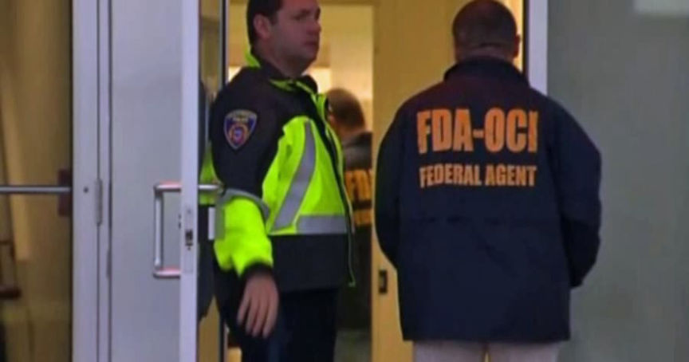
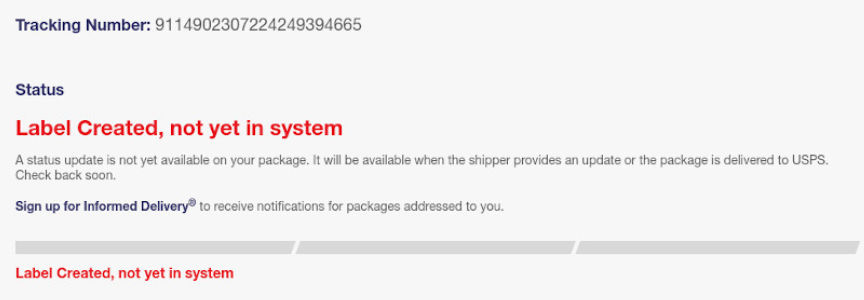
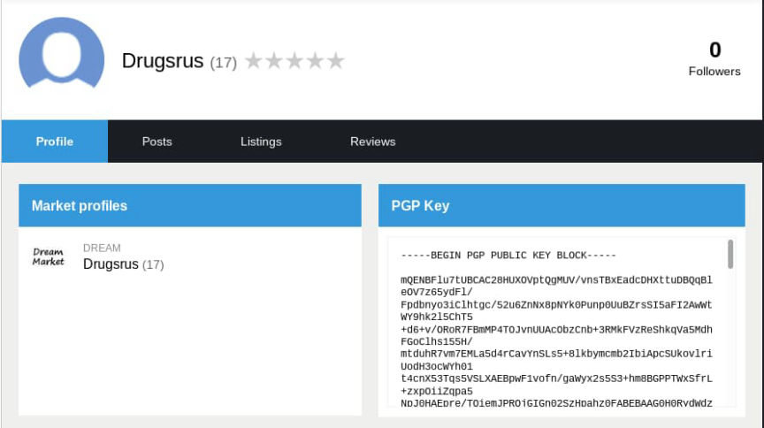
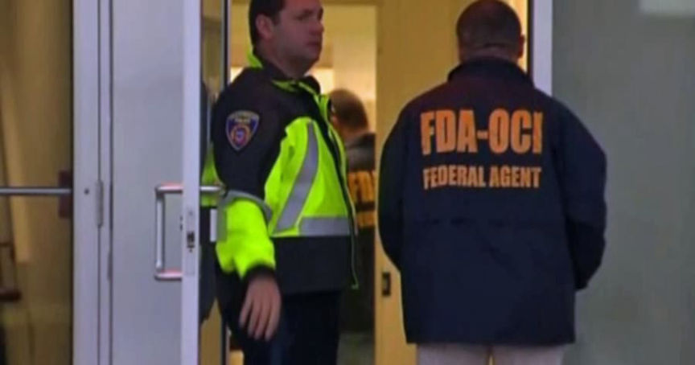
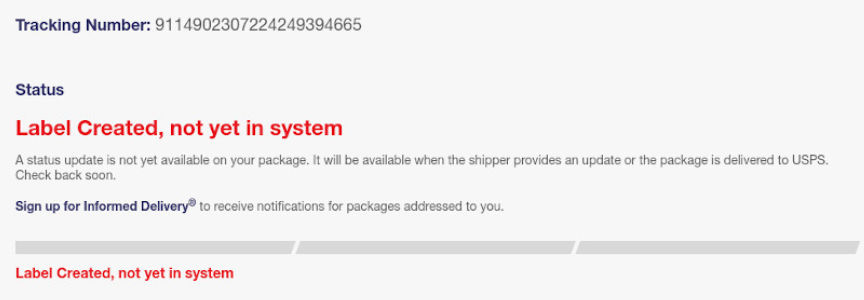
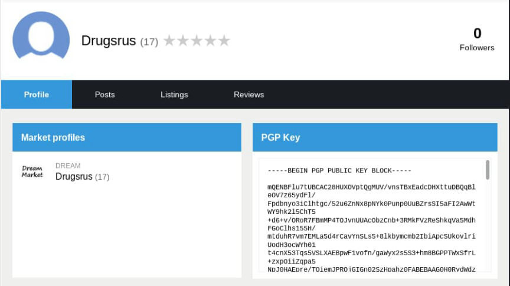

Empire Vendor XanScriptz Admits Selling Fake Xanax Pills
~4 min read | Published on 2021-12-11, tagged Darkweb-Vendor, Pleaded-Guilty using 824 words.
A man living in Virginia admitted selling counterfeit Xanax pills through a vendor account on the darkweb.
Anthony Dimaiuat, 26, admitted selling counterfeit Xanax pills pressed with clonazolam and flubromazolam through a vendor account on Empire Market. According to court documents, the Food and Drug Administration Office of Criminal Investigations (FDA-OCI) and the United States Postal Inspection Service (USPIS) launched an investigation into the Empire Market vendor “Xanscriptz” in early 2020.

In February 2020, investigators examined packages in bulk from Norfolk, Virginia. This examination resulted in the discovery of a significant number of packages of the same bulk and weight. All of the packages had the same or similar return address at Bonney Road in Virginia Beach, Virginia. All of the packages had pre-printed shipping labels and postage from a USPS postage reseller.
On February 1, 2020, USPIS intercepted a USPS Priority Mail package with the tracking number 9114902307224636563674. The package had a Virginia Beach return address. Upon further investigation, Postal Inspectors learned that the stamp on the package had been purchased at the USPS Self Service Kiosk at the Virginia Beach Post Office on the same day. The payment method used to purchase the postage was a Visa debit card ending in 0977. A review of purchases associated with that card revealed a total of 36 separate transactions between October 2019 and February 2020 at three USPS Self Service Kiosks in the area.

Investigators pulled the pictures taken on three days in December, three days in January, and one day in February to obtain a visual identification of the suspect. The person in the photographs, later identified as Anthony Dimaiuat, was described as a White male with dark hair and a Nike jacket.
Investigators claim they identified the person in the kiosk photographs as Dimaiuat by reviewing Virginia DMV records.
On April 22, 2020, a member of the investigative team conducted an undercover purchase of ten Xanax-labeled pills from darknet vendor XanScriptz on Empire Market. An address in Chicago, Illinois, was provided to the vendor for the shipment. On April 27, 2020, the USPS Priority Mail parcel with tracking number 9405 5368 9784 6556 5580 86 was retrieved from the UC box. The parcel was subsequently opened and consisted of one small clear vacuum-sealed bag containing I I /2 white rectangular pills stamped with “XANAX” on one side and “2” on the other, weighing 2.8 grams. Packaging material included one USPS flat rate Priority Mail envelope, one self-seal manila envelope, one white bubble mailer with a USPS Priority Mail sticker (Label 107R), and one silver mylar bag. The parcel contained a pre-printed label with the sender’s name and a return address in Chesapeake, Virginia. Subsequent USPIS laboratory analysis of one of the pills purchased on April 22, 2020, showed that it contained Clonazolam, a non-scheduled substance, and confirmed that the pill was not actually Xanax.
After conducting at least two undercover purchases from the XanScriptz vendor account, investigators obtained a search warrant for Dimaiuat’s residence. During the search, law enforcement recovered two label printers and envelopes, a ledger, three digital scales, a food saver, three rolls of priority mail stickers, approximately 2,400 grams of white pills, two glass jars containing a white powder, drug packaging material, postal boxes, and USPS envelopes. Subsequent analysis of a sampling of the pills revealed they contained Clonazolam and Flubromazolam. A USPIS Laboratory analysis of the white powder discovered in the glass vials confirmed that the substance contained cocaine.

The feds advised Dimaiuat–who was present during the search–that he was not under arrest and informed him of his Miranda rights. Dimaiuat did the natural thing and waived his Miranda rights. He told investigators that he had been buying counterfeit Xanax pills on the darkweb for two years. He purchased between 250 and 500 pills every time. He originally purchased the pills for personal use and local distribution but opened the vendor account on Empire Market in late 2019.
He provided his password and log-in information to investigators.
Dimaiuat went one step further. I am not sure I have ever seen anyone go this far. After law enforcement left Dimaiuat’s residence, Dimaiuat realized that law enforcement had not located all of his counterfeit Xanax pills. At a later date, Dimaiuat informed law enforcement officers of their mistake and voluntarily made the pills available to the police.
The bulk mail analysis seems like a neat way to catch vendors. It reads vaguely like parallel construction. But even if it is, it seems like a useful tactic.
Even though Dimaiuat told investigators that he did not know the Xanax pills contained clonazolam or flubromazolam–neither of which are federally controlled substances–he pleaded guilty to one count of selling misbranded drugs with the intent to mislead or defraud.
This investigation was brought to you by Pfizer.
Anthony Dimaiuat, 26, admitted selling counterfeit Xanax pills pressed with clonazolam and flubromazolam through a vendor account on Empire Market. According to court documents, the Food and Drug Administration Office of Criminal Investigations (FDA-OCI) and the United States Postal Inspection Service (USPIS) launched an investigation into the Empire Market vendor “Xanscriptz” in early 2020.

The FDA-OCI is the FDA with guns, working with large pharmaceutical companies to end production of counterfeit pills.
In February 2020, investigators examined packages in bulk from Norfolk, Virginia. This examination resulted in the discovery of a significant number of packages of the same bulk and weight. All of the packages had the same or similar return address at Bonney Road in Virginia Beach, Virginia. All of the packages had pre-printed shipping labels and postage from a USPS postage reseller.
On February 1, 2020, USPIS intercepted a USPS Priority Mail package with the tracking number 9114902307224636563674. The package had a Virginia Beach return address. Upon further investigation, Postal Inspectors learned that the stamp on the package had been purchased at the USPS Self Service Kiosk at the Virginia Beach Post Office on the same day. The payment method used to purchase the postage was a Visa debit card ending in 0977. A review of purchases associated with that card revealed a total of 36 separate transactions between October 2019 and February 2020 at three USPS Self Service Kiosks in the area.

All of the tracking numbers listed in the court documents have no tracking history.
Investigators pulled the pictures taken on three days in December, three days in January, and one day in February to obtain a visual identification of the suspect. The person in the photographs, later identified as Anthony Dimaiuat, was described as a White male with dark hair and a Nike jacket.
Investigators claim they identified the person in the kiosk photographs as Dimaiuat by reviewing Virginia DMV records.
On April 22, 2020, a member of the investigative team conducted an undercover purchase of ten Xanax-labeled pills from darknet vendor XanScriptz on Empire Market. An address in Chicago, Illinois, was provided to the vendor for the shipment. On April 27, 2020, the USPS Priority Mail parcel with tracking number 9405 5368 9784 6556 5580 86 was retrieved from the UC box. The parcel was subsequently opened and consisted of one small clear vacuum-sealed bag containing I I /2 white rectangular pills stamped with “XANAX” on one side and “2” on the other, weighing 2.8 grams. Packaging material included one USPS flat rate Priority Mail envelope, one self-seal manila envelope, one white bubble mailer with a USPS Priority Mail sticker (Label 107R), and one silver mylar bag. The parcel contained a pre-printed label with the sender’s name and a return address in Chesapeake, Virginia. Subsequent USPIS laboratory analysis of one of the pills purchased on April 22, 2020, showed that it contained Clonazolam, a non-scheduled substance, and confirmed that the pill was not actually Xanax.
After conducting at least two undercover purchases from the XanScriptz vendor account, investigators obtained a search warrant for Dimaiuat’s residence. During the search, law enforcement recovered two label printers and envelopes, a ledger, three digital scales, a food saver, three rolls of priority mail stickers, approximately 2,400 grams of white pills, two glass jars containing a white powder, drug packaging material, postal boxes, and USPS envelopes. Subsequent analysis of a sampling of the pills revealed they contained Clonazolam and Flubromazolam. A USPIS Laboratory analysis of the white powder discovered in the glass vials confirmed that the substance contained cocaine.

Xanscriptz also has an account on Dread under the same username.
The feds advised Dimaiuat–who was present during the search–that he was not under arrest and informed him of his Miranda rights. Dimaiuat did the natural thing and waived his Miranda rights. He told investigators that he had been buying counterfeit Xanax pills on the darkweb for two years. He purchased between 250 and 500 pills every time. He originally purchased the pills for personal use and local distribution but opened the vendor account on Empire Market in late 2019.
He provided his password and log-in information to investigators.
Dimaiuat went one step further. I am not sure I have ever seen anyone go this far. After law enforcement left Dimaiuat’s residence, Dimaiuat realized that law enforcement had not located all of his counterfeit Xanax pills. At a later date, Dimaiuat informed law enforcement officers of their mistake and voluntarily made the pills available to the police.
The bulk mail analysis seems like a neat way to catch vendors. It reads vaguely like parallel construction. But even if it is, it seems like a useful tactic.
Even though Dimaiuat told investigators that he did not know the Xanax pills contained clonazolam or flubromazolam–neither of which are federally controlled substances–he pleaded guilty to one count of selling misbranded drugs with the intent to mislead or defraud.
This investigation was brought to you by Pfizer.